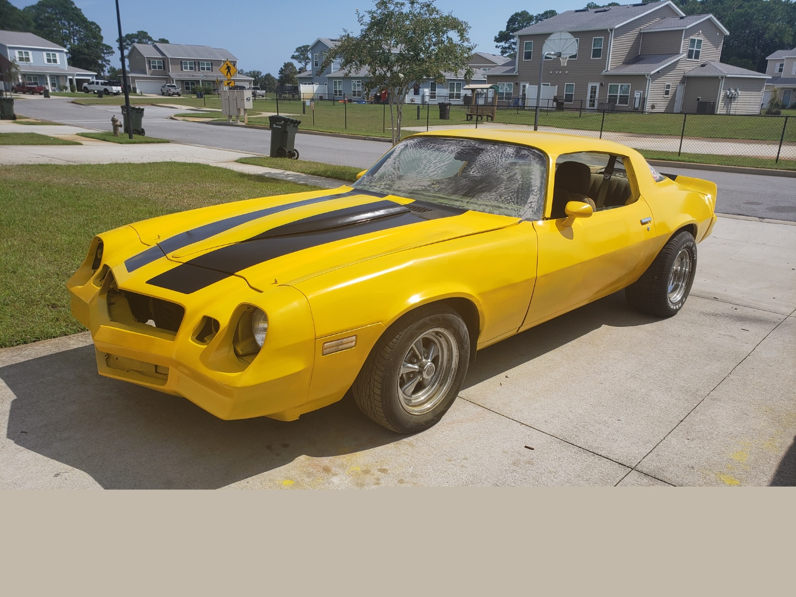
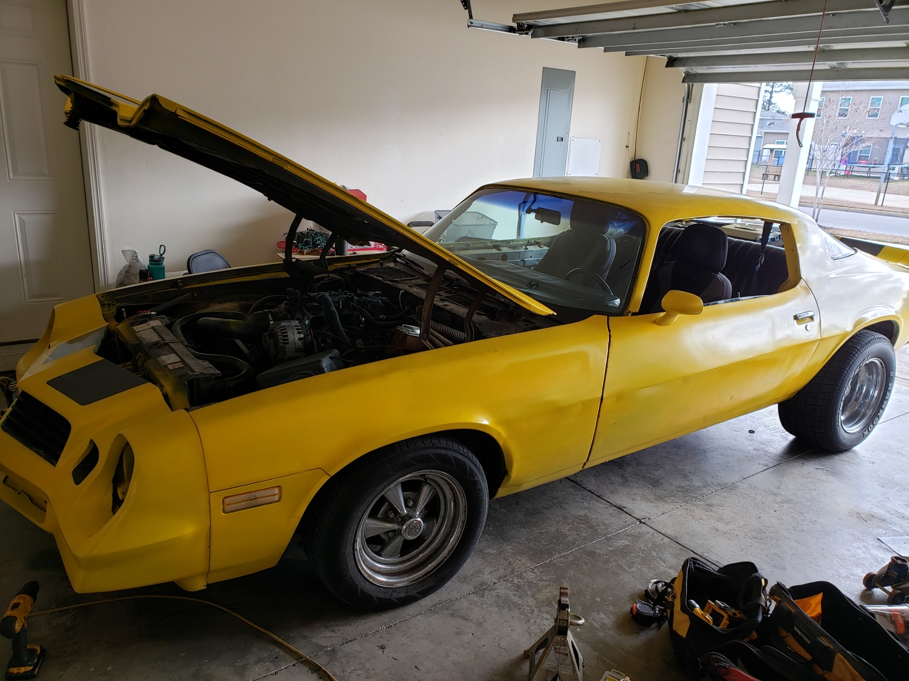

Car Stuff
Heres a little about me.
Hello Class! Welcome to my page. My name is Paul. Here is a little bit of information about me. I’m a 33 year old vehicle mechanic in Florida studying Computer
Programming Tech. After high school I went to college for a hardware degree but I did not finish it. While I was in college I took a programming in C class which
completely turned me off on programming. I wanted to work with my hands and build things but programming was long hours of puzzle solving at a desk. 15 years later
Im almost done with a programming degree and I actually enjoy it now. I know I have changed but there have also been a lot of changes in software since 2005. I still
think I want to go back and finish my hardware degree but I am happy distance from school has brought me to Southwestern for this degree. I think one of the great
benefits of this degree will be that I should be able to find a good paying job just about anywhere I want to go. I do want to shift to working with computers for a
living and doing auto maintenance as a hobby. Maybe one day it will pay enough to run a classic restoration shop.
I have a deep passion for classic cars. I own a 1979 Camaro and a 1959 Chevy 1 ton truck. The Camaro is yellow with black stripes and earned the name Crumblebee. Its
got an LS swap and a box of "go fast" parts ready to install. Im planning to slowly turn it into a dedicated track car. The truck is my baby though. Im planning to
frame swap it soon to a modern truck chassis. I want it to look as classic as when it was built and feel as modern as a truck you would buy today.


My most trusted links for parts or information